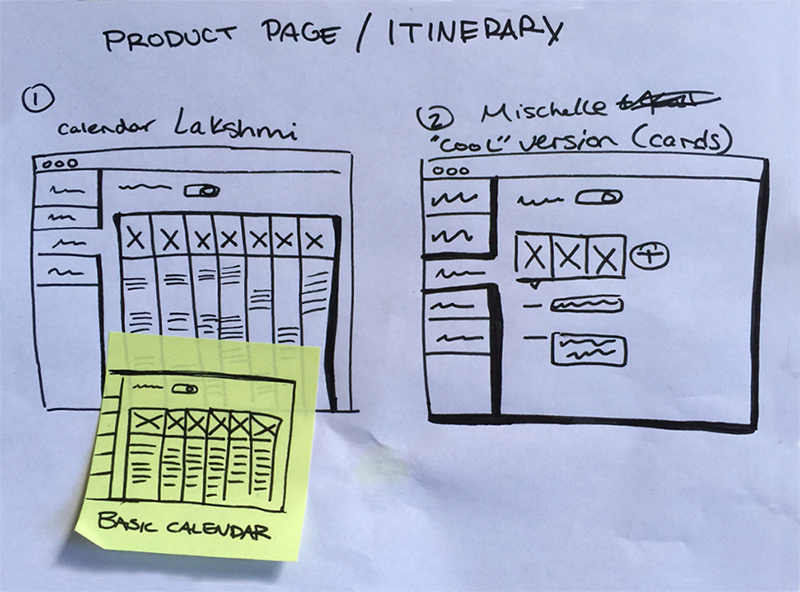

ROLE
I was in a team of 4 designers, and involved in usability research, designing, iterating and prototyping the final product.
CONSTRAINTS
Outcomes
Before
After
Results
With the new redesign, we found that userse were able to create itineraries and able to navigate through the onboarding process and publish a trip with ease.
150%
INCREASE IN ITINERARY CREATION
150%
INCREASE IN NAVIGATING AND PUBLISHING
150%
INCREASE IN TRIP TYPE COMPREHENSION
Process
In order to achieve our goals, we first usability tested the current Wetravel web app. Based on our findings, we went through a design studio process to generate ideas. We then prototyped and rapidly tested and iterated on our designs. And we then went into a final round of validation testing.
Usability Studies
Design Studio
Rapid Iteration
Validation Testing
Usability Studies
Persona Creation
Based on our discussion with the clients, we created provisional personas of the 2 types of users of WeTravel, Public Trip Organizers, and Private Trip Organizers. We used these to recruit participants for usability studies.
Public Trip Organizer
Public Trip Organizer
Usability Testing
We conducted usability testing of the trip creation and onboarding process on 5 users.
We then took down the key pain points faced by the users, and used affinity mapping to group similar pain points of each user.

We focused our redesign efforts on the 5 pain points that were experienced by 3 or more users.
Pain Points
| Pain Point | Problem Faced | Design Hypothesis |
|---|---|---|
Itinerary |
3/5 users were unable to successfully create a trip itinerary |
|
Trip Creation |
3/5 users did not know which part they were in, in the trip creation process |
|
Trip Publishing |
3/5 users were unsure if they had successfully published the trip, and what publish even meant. |
|
Private vs Public |
3/5 users were unable to understand what the difference between a Private and a Public trip is. |
|
Design Studio
Based on the hypotheses we developed during usability testing, we went into a design studio with the clients to quickly generate and vote on top ideas that could solve the pain points.
Low Fidelity Wireframes
We decided to mock up the top 2 voted itinerary views and test them out using a rapid iteration and testing process.
Since users were confused about the Public vs Private trips, we also wireframed some ideas of making that clearer during the onboarding/sign up process.
We also felt that a top nav would be be easier for users to navigate. So we mocked up our designs on both a left nav (existing design) and a top nav (our proposed design).
UI Flows
Before jumping right into the high fidelity mockups, we also worked on the UI flow of the entire trip creation and onboarding process.
Rapid Design Iteration and Testing
We then developed high fidelity mockups which we prototyped using InVision. We tested these prototypes on a new set of users every day. And based on the results and their feedback, we modified the designs, and tested them the next day. We did this method of rapid iteration for one week.
Navigation
We tested out both the top and left navigation, and users definitely strongly preferred and understood the top navigation much better.
Top Nav
Left Nav
For all future iterations, we then proceeded to use the top nav.
Itinerary View
We tested out both the Cards and the Calendar Views and through testing, we found that users preferred the Calendar View. It was a familiar way in which they were used to plan their days, and thus they were able to navigate it better.
Calendar Itinerary
Card Itinerary
During our week of rapid iteration, we incorporated areas in which users felt confused, and took in their suggestions and kept refining our ideas.
We added both a 'Detailed Day View' for users who want to do minute level planning as well as a 'Trip Overview' for users who only want to plan their trips more broadly.
We also added a 'Sample Day Card' for make it even easier for users to understand.
Final Detailed Itinerary

Final Overview Itinerary
Validation Testing
After a week of rapid design iterations, we had improved on our initial prototype significantly. Now it was time to validate the prototype with 10 trip organizers and users of WeTravel itself.
Itinerary
Add a day theme

Add a event in a day
Count total no. of days
The new itinerary was very simple to use for all 10 users. Some of the users said they loved that they can just do a broad overview itinerary and some loved the ability to add individual events!
Publishing
Tell if the trip is published
Unpublish a trip
Save as Draft
Users were also easily able to tell the status of their trip, and save a draft and switch from published to unpublish.
Public vs Private
Understand 'Public' vs 'Private' trip difference
Switch trip from Public to Private
Users were also easily able to tell the status of their trip, and save a draft and switch from published to unpublish.
Insights and Recommendations
We were able to validate all 4 hypotheses we had going into the design process, which significantly improved users' comprehension of the trip creation process and the ease with which they were able to onboard themselves.
For the future, we recommend following native calendar apps such as Google Calendar and iCal more closely, such as in-calendar event adding, ability to drag and drop to change time, popover to edit event details etc.